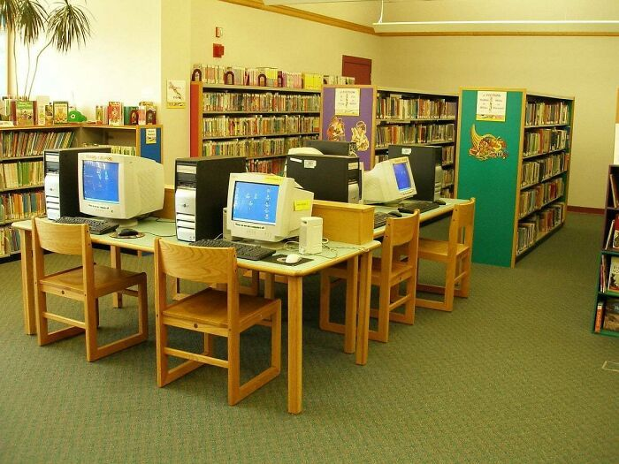

Proyecto: Diseño de Base de Datos para una Biblioteca

Proyecto orientado al diseño de una base de datos para organizar la información de una biblioteca, incluyendo libros, autores, socios y registros de préstamos
Categoría: Base de Datos
Ver detalle
Proyecto: Traduccion Tecnica Ingles III

Proyecto de traduccion de Ingles Tecnico al lenguaje español
Categoría: Idiomas
Ver detalle
Proyecto: Calculadora en C

Categoría: Programación
Ver detalle
Proyecto: Instalacin de Linux Debian

Categoría: Sistemas Operativos
Ver detalle
Proyecto: Lista de Nombres Ordenada

Descripción breve: Un ejercicio para guardar nombres y que se acomoden solos alfabéticamente.
Categoría: Programación
Ver detalle